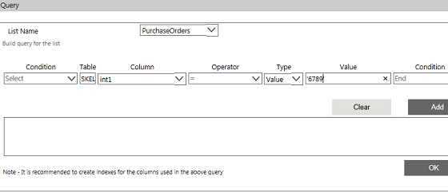
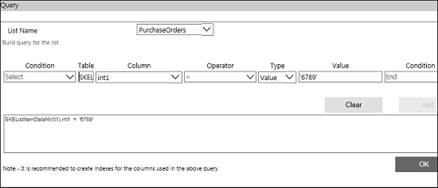
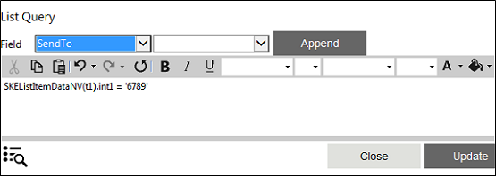
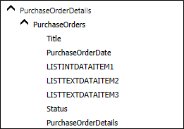

No
Adding a New Grid Item to the Existing List Item
AVEVA Work Tasks allows you to add list items with grid items to the existing list item using XML variable. The Update Variable activity can be used to perform this task. An XML Iterator type XML variable should be created to add the grid items (child items) and the XML Navigator activity can be used to point to the grid. Also, you have to use the List Query property of List Navigator activity to build the query and to point to the list item to add a new grid.
This can be explained through the scenario mentioned below.
A list, Purchase Orders, has been created with the following fields.
- Reference Number
- Purchase Order Date
- Raised By User
- Deliver To User
- Status
- Purchase Order Details
- Item Name
- Quantity
- Unit Price
- Item Total
- Total Purchase amount
From the workflow, you have to add a grid item to a particular order say Reference No. 456789 in the Purchase Orders list.
To add a new grid item to the existing list item
- Login to the Enterprise Console and go to Workflow Designer. You need to create an XML List type XML variable for the Purchase Orders list. If the variable is not created, follow the below mentioned procedure to create it.
- Click the edit icon in the XMLVariables property from the Start Activity Properties. The following screen is displayed.

- Click New Variable to add a new variable.
- Enter the variable name as purchaseorders.
- Select XML List from the Type drop-down list.
- Enter the List name or click the
 icon to select the list. In this case, select Purchase Orders list.
icon to select the list. In this case, select Purchase Orders list. - Select New as the scope from the ListItem Scope Options to point to a new item in the Purchase Orders list.

- Now you can see the XML nodes in a tree-view that are mapped to the controls while creating the list. You can also notice that the parent XML nodes and child XML nodes (PurchaseOrderDetails grid) are also displayed.
- Click Save Variable. A message is displayed saying 'Variable Updated'. Close the window.
- Drag and drop List Navigator activity and select List Query as the scope.
- Click edit icon in the List Query property. The following screen is displayed.
- Click the icon to build the query for the list Purchase Orders. The following screen is displayed.
- Select Purchase Orders from the List Name drop-down list.
- Click Table field to select the table.
- Select SKEListItemDataNV displayed on the top of the tree-view, since you are building a query for an item in the parent table. This will be displayed automatically in the text box.
- Click the Column drop-down list.
- Select int1 from the options as it is mapped to the Reference No field.
- Select the operator '=' from the Operator drop-down list.
- Select Value from the Type drop-down list.
- Type '456789' in the text box.
- Select End from the Condition drop-down list to end the query.

- Click Add to add the condition in the text field.

- Here, SKEListItemDataNV is the table name where the list has been stored and t1 this the internal name that has been used for the master table. If there is any child table also, it will display as t2. Int1 this the field name to which you want to point your XML variable and 6789 is the value for that field.
- Click OK, and then click Close.

- Click Update.
- If you want to add an item to the grid (in this case, if you want to add a Qualification grid item), use XML Navigator activity. XML Navigator can be used to point to an item in the grid (PurchaseOrderDetails in this case). For this purpose you need to create an XML Iterator type XML Variable. This can be created from the Start activity XML variable property.
- On the XML Variable screen, click New Variable.
- Type the variable name as purchaseorderdetails.
- Select XML Iterator from the Type drop-down list.
- Select purchaseorders from the XML Variable drop-down list. Select the repeating node (Qualification) from the Node Select drop-down list.
- Click Save Variable. A message is displayed saying 'Variable Updated'. Close the window.
- Drag and drop XML Navigator activity.
- Select purchaseorderdetails from XML Iterator drop-down list. Select Yes from Create New Node properties to create a new node.
- Select the appropriate Location. The options available are:
- First: Navigates to the first record in the collection.
- Last: Navigates to the last record in the collection.
- Next: Navigates to the next record based on the current location.
- Previous: Navigates to the previous record based on current location.
- Index: Navigates to the record identified in the Index field.
- Since we have to append the items in Purchase Order Details grid, select the option as Last.
- Click Save.
- Drag and drop the Update Variable activity to enter the grid field values.
- Click the edit icon in the Set Variables property.
- Click Select link and choose the respective field of the XML Iterator type XML Variable created for the list (in this case purchaseorderdetails), that is grid items. The fields displayed in the tree-view represent the XML nodes of the controls in the PurchaseOrderDetails grid.

- Select a field for which you want to set the value from the tree-view. Enter the value for the field in the right-hand side text box. If you want to set the value, select 'enter a value' from the tree-view and then enter the value. Also, you can select variables or contents or any XML variables nodes directly by selecting the respective node from the tree-view. If you want to combine multiple node values, you can build an expression by selecting Build Expression.
- After setting the value for all the fields in the child item, click OK. Now, a grid item will be added to the list while executing the workflow.
Note: If you want to add multiple items, use XML Navigator and Update Variable for Iterator within the For-Next Loop activities.